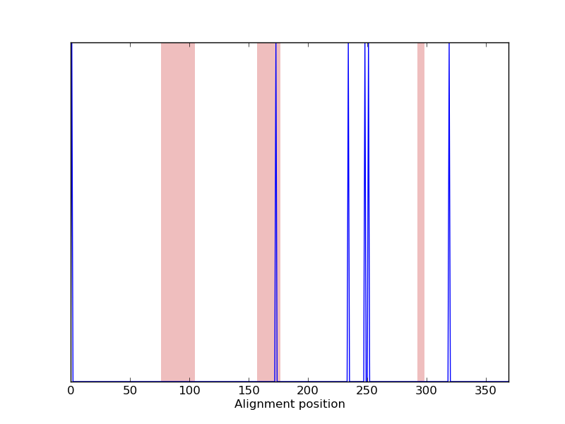
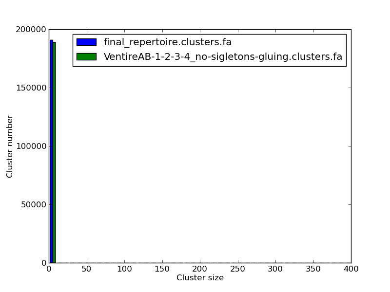
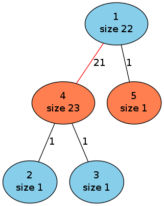

IgQUAST 1.0 manual
1. What is IgQUAST?
1.1 What is antibody repertoire?
1.2 IgQUAST modes
2. Installation
2.1 Verifying your installation
3. RunningIgQUAST
3.1 Basic options
3.2 Basic output
4. Single repertoire evaluation mode
4.1 Single repertoire evaluation options
4.2 Single repertoire evaluation metrics
4.3 Single repertoire evaluation output
4.4 Single repertoire evaluation examples
5. Multiple repertoires comparison mode
5.1 Multiple repertoires comparison options
5.2 Multiple repertoires comparison metrics
5.3 Multiple repertoires comparison output
5.4 Multiple repertoires comparison examples
5. Quality assessment against an ideal repertoire mode
5.1 Quality assessment against an ideal repertoire options
5.2 Quality assessment against an ideal repertoire metrics
5.3 Quality assessment against an ideal repertoire output
5.4 Quality assessment against an ideal repertoire examples
6. Feedback and bug reports
1. What is IgQUAST?
IgQUAST (Immunoglobulin QUality ASsessment Tool) is a tool for quality assessment of antibody repertoire.
IgQUAST takes antibody repertoire(s) as an input and evaluates them in the three different ways.
1.1 What is antibody repertoire?
Antibody repertoire is a set of clusters that correspond to antibody clones (groups of identical antibodies presenting by antibody nucleotide sequence, frequency and a set of Ig-Seq reads composing group).
We use two files to describe antibody repertoire: CLUSTERS.FA (FASTA file containing antibody sequences) and RCM (Read-Cluster Map).
Examples of CLUSTERS.FA and RCM files for toy repertoire are listed below.
CLUSTERS.FASTA is a FASTA file, where each sequence corresponds to the antibody clone. Header of each sequence contains information about corresponding cluster id and size:
>cluster___1___size___3
CCCCTGCAATTAAAATTGTTGACCACCTACATACCAAAGACGAGCGCCTTTACGCTTGCCTTTAGTACCTCGCAACGGCTGCGGACG
>cluster___2___size___2
CCCCTGCAATTAAAATTGTTGACCACCTACATACCAAAGACGAGCGCCTTTACGCTTGCCTTTAGTACCTCGCAACGGCTGCGG
>cluster___3___size___1
CCCCTGCAATTAAAATTGTTGACCACCTACATACCAAAGACGAGCGCCTTTACGCTTGCCTTTAGTACCTCGCAACGGCTGCGGAC
Every line of RCM file contains information about read name and corresponding cluster id:
MISEQ@:53:000000000-A2BMW:1:2114:14345:28882 1
MISEQ@:53:000000000-A2BMW:1:2114:14374:28884 1
MISEQ@:53:000000000-A2BMW:1:2114:14393:28886 1
MISEQ@:53:000000000-A2BMW:1:2114:16454:28882 2
MISEQ@:53:000000000-A2BMW:1:2114:16426:28886 2
MISEQ@:53:000000000-A2BMW:1:2114:15812:28886 3
1.2 IgQUAST modes
IgQUAST has three modes:
2. Installation
IgQUAST requires the following pre-installed dependencies:
- 64-bit Linux system
- g++ (version 4.7 or higher)
- Python (version 2.7 or higher)
- Additional Python modules
To install IgQUAST, type:
make
2.1. Verifying your installation
To try IgQUAST on test data set, run:
./ig_quast.py --test
If the installation is successful, you will find the following information in the log:
======== IgQUAST ends
Main output files:
Computed metrics in TXT were written to <igtools_installation_directory>/ig_quast_results/YYYY-MM-DD_HH-MM-SS/metrics.txt
Computed metrics in CSV were written to <igtools_installation_directory>/ig_quast_results/YYYY-MM-DD_HH-MM-SS/metrics.csv
Thank you for using IgQUAST!
Log was written to <igquast_installation_directory>/ig_quast_results/YYYY-MM-DD_HH-MM-SS/ig_quast.log
where YYYY-MM-DD_HH-MM-SS is time of IgQUAST run.
3. Running IgQUAST
IgQUAST tool takes as an input single or multiple pairs of CLUSTERS.FASTA and RCM files (see details in section 1.1 What is antibody repertoire?) and various options specific for each mode.
RCM files are optional since user does not always have information about mapping of Ig-Seq reads to clusters.
Command line of IgQUAST:
./ig_quast.py [options]
3.1 Basic options
--c<#> <file_name>
CLUSTERS.FASTA file with antibody clusters number <#> (<#> = 1, 2, 3, 4, 5) (required).
For example, for the first CLUSTERS.FASTA file the option is: --c1 <file_name>.
--r<#> <file_name>
RCM file with antibody clusters number <#> (<#> = 1, 2, 3, 4, 5).
For example, for the first RCM file the option is: --r1 <file_name>.
--out <output_dir>
Output directory.
If option --out is not specified, IgQUAST working directory is <igquast_installation_directory>/ig_quast_results/YYYY-MM-DD_HH-MM-SS, where YYYY-MM-DD_HH-MM-SS is time of IgQUAST run.
--help
Prints help.
--test
Runs test dataset.
IgQUAST command line is equivalent to:
./ig_quast.py --c1 ./test_dataset/test.clusters.fa --r1 ./test_dataset/test.rcm
3.2 Basic output
For each input repertoire <repertoire_name> IgQUAST creates subdirectory <repertoire_name> and creates there the following files.
NOTE: if several repertoires have the same name <repertoire_name>, IgQUAST enumerates them and creates subdirectories <repertoire_name>_1, <repertoire_name>_2 etc.
- clusters_sizes.txt - file containing size of clusters of input repertoire.
- Plots:
- all_cluster_sizes.png - PNG file showing histogram of cluster size distribution for all clusters of input repertoire.
- nt_cluster_sizes.png - PNG file showing histogram of cluster size distribution for non-trivial (size > 1) clusters of input repertoire.
- big_cluster_sizes.png - PNG file showing histogram of cluster size distribution for big clusters (size > 25) of input repertoire.
- constructed_cluster_lengths.png - PNG file showing histogram of sequence length distribution.
|
|
| all_cluster_sizes.png |
nt_cluster_sizes.png |
|
|
| big_cluster_sizes.png |
constructed_cluster_lengths.png |
- ig_quast.log - log of IgQUAST.
4.0 Single repertoire evaluation mode
IgQUAST takes a sinlge repertoire as an input and computes a set of basic metrics and performs advanced analysis of mutated groups of input repertoire (optionally).
4.1 Single repertoire evaluation options
--adv-analysis
Enables advanced analysis of mutated groups.
Analysis searches similar clusters for each big cluster (by default, cluster of size >10), performs pairwise alignment and draws plot of polymorphism positions (see Single repertoire evaluation output).
--adv-min-size <int>
Minimal size of clusters that will be analyzed by advanced analysis of mutated groups.
Default value is '10'.
NOTE: Small value of --adv-min-size can significantly slow running time of IgQUAST.
4.2 Single repertoire evaluation metrics
| Metric name |
Description |
| # clusters |
Number of clusters of input repertoire. |
| # singletons |
Number of clusters of size 1. |
| Max cluster |
Size of maximal cluster. |
| Avg cluster |
Average size of clusters. |
| # clusters (>=N) |
Number of clusters of size N or larger.
IgQUAST uses several values of N: 10, 50, 100, 500, and 1000. |
4.3 Single repertoire evaluation output
IgQUAST produces the following files in Single repertoire evaluation mode:
- Computed metrics:
- metrics.txt - computed metrics in TXT format.
Example of metrics.txt file for Single repertoire evaluation mode is listed below.:
# clusters 145
# singletons 102
max cluster size 115
avg cluster size 7
# clusters (>=10) 31
# clusters (>=50) 4
# clusters (>=100) 1
# clusters (>=500) 0
# clusters (>=1000) 0
- metrics.csv - computed metrics in CSV (comma-separated) format.
- Advanced analysis output: located in subdirectory advanced_analysis including:
- blast.output - result of BLAST alignment of input CLUSTERS.FA file against IMGT database.
- igblast.output - result of IgBlast alignment of input CLUSTERS.FA file against database of human Ig germline genes.
- subdirectory somatic_search_results including:
- subdirectories cluster_<N>, where N is id of analysed cluster. It includes plots of pairwise alignment against similar clusters and plot showing summarized alignment. Red bars on plots correspond to positions of CDRs predicted by IgBlast (see examples below).
- polymorphism_positions.txt - file contaning information about relative positions of all polymorphisms in constructed alignment.
- polymorphism_positions.png - PNG file showing histogram of distribution of polymorphism relative positions. Red bars correspond to theoretical positions of CDRs.
|  |
|
|
| example of plot of pairwise alignment |
example of plot of summarized alignment |
polymorphism_positions.png |
4.4 Single repertoire evaluation examples
Running IgQUAST on single repertoire presenting by CLUSTERS.FASTA file only, with disabled advanced analysis of mutated groups:
./ig_quast.py --c1 repertoire.clusters.fa
Running IgQUAST on single repertoire presenting by CLUSTERS.FASTA file only, with enabled advanced analysis of mutated groups. Advanced analysis will be performed for clusters larger 100 only:
./ig_quast.py --c1 repertoire.clusters.fa --adv-analysis --adv-min-size 100
5.0 Multiple repertoires comparison mode
IgQUAST compares multiple repertoires constructed from the same sequencing library by different tools and computes their similarity. As a result, IgQUAST constructs the most probable relations between clusters of input repertoires based on the sequence alignment and information about read mapping in RCM files (optionally).
5.1 Multiple repertoires comparison options
--errors <int>
Maximal allowed number of mismatches used in comparison of cluster sequences. Default value is '4'.
--isol-min-size <int>
Size cutoff for isolated clusters comparison and drawing graphs. Default value is '20'.
5.2 Multiple repertoires comparison metrics
General metrics for all compared repertoires
| Metric name |
Description |
| # ideal groups |
Number of clusters that are identical in all input repertoires, i.e. have similar sequences and were combined by the same set of reads |
| # trusted groups |
Number of groups where clusters from different repertoires have similar sequences and share >90% of reads. Such groups occur when cluster from one repertoire is presented by one big and several small clusters in other repertoires. These groups can be result of inaccurate error correction of one of input repertoires. |
| # untrusted groups |
Number of groups where clusters from different repertoires have non-similar sequences and share >90% of reads. Existence of such groups indicates that at least one of cluster sequence from untrusted group is erroneous and should be reconstructed |
| # non-trivial ideal/trusted/untrusted groups |
Ideal/trusted/untrusted groups where at least one cluster is not singleton. |
| # big untrusted groups |
Number of groups of big clusters (only clusters of size at least as specified with option --isol-min-size) from different repertoires that have similar sequences and share >90% of reads. |
Individual metrics for each repertoire
| Metric name |
Description |
| # isolated clusters |
Number of clusters that presented in only one input repertoire and have no similar clusters in other repertoires. |
| # short clusters |
Number of clusters with length of sequence <300 nt. |
| # short isolated clusters |
Number of isolated clusters with length of sequence <300 nt. |
| min/avg/max cluster size |
Minimal/average/maximal size of isolated cluster. |
| # trivial isolated clusters |
Number of isolated singletons |
5.3 Multiple repertoires comparison output
- Computed metrics:
- metrics.txt computed metrics in TXT format. Example of metrics.txt file for Multiple repertoires comparison mode is listed below.
General metrics:
#ideal groups 259673
#trusted_groups 259756
#untrusted_groups (>4 errors) 182853
#non-trivial ideal groups 14434
#non-trivial trusted_groups 14517
#non-trivial untrusted_groups (>4 errors) 436
#big untrusted groups (>4 errors, size >20) 5
Metrics for repertoires:
repertoire_1.clusters.fa:
#clusters 473296
#singletons 447113
max constructed cluster size 241
avg constructed cluster size 1
#isolated clusters 190771
#short isolated_clusters (<300bp) 4160
min isolated cluster size 1
avg isolated cluster size 1.034
max isolated cluster size 39
#trivial isolated clusters (size = 1) 187242
repertoire_2.clusters.fa:
#clusters 470529
#singletons 443432
max constructed cluster size 400
avg constructed cluster size 1
#isolated clusters 188902
#short isolated_clusters (<300bp) 4081
min isolated cluster size 1
avg isolated cluster size 1.054
max isolated cluster size 400
#trivial isolated clusters (size = 1) 184001
- metrics.csv computed metrics in CSV (comma separated) format.
- Statistics:
- Plots:
- cluster_groups.png - PNG file with cluster groups shared percentage distribution.
- cluster_groups_nt.png - PNG file with non-trivial cluster groups shared percentage distribution.
- isolated_cluster_sizes.png - PNG file with histograms of distribution of isolated cluster sizes for constructed repertoires.
- isolated_nt_cluster_sizes.png - PNG file with histograms of distribution of non-trivial isolated cluster sizes given constructed repertoires.
- isolated_big_cluster_sizes.png - PNG file with histograms of distribution of big isolated cluster sizes for constructed repertoires.
- isolated_cluster_lengths.png - PNG file with histograms of distribution of isolated cluster lengths for constructed repertoires.
|
|
 |
| cluster_groups.png |
cluster_groups_nt.png |
isolated_cluster_sizes.png |
|
|
|
| isolated_nt_cluster_sizes.png |
isolated_big_cluster_sizes.png |
isolated_cluster_lengths.png |
- cluster_graphs - directory with DOT files showing relations between clusters of compared repertoires (examples of cluster graphs).
NOTE: IgQUAST draws cluster graphs only if all RCM files were provided.
neighbour_clusters.txt file format
File contains map from clusters from one repertoire to another (neighbour clusters are determined as closest in terms of hamming distance) in following format:
rep_id1./path/to/rep1 rep_id2./path/to/rep2
rep_id1.cluster_id1 - rep_id2.cluster_id2 (score = score)
...
big_isolated_clusters.txt / big_untrusted_groups.txt file format
For each big isolated cluster stores information about hamming distances to all clusters that shares reads with the current cluster in following format:
rep_id1./path/to/rep1
rep_id2./path/to/rep2
Cluster rep_id1.cluster_id1(size = cluster_size)
rep_id2.cluster_id2 shared #shared_reads: score = alignment_score, shift = seq_shift, errors = hamming_distance, strand = strand
...
----------------------------------------------------------
Cluster ...
Cluster graphs
Cluster graph shows relation between similar clusters from the different repertoires and represents one the following situation:
- ideal group (left graph on the figure below)
- trusted group (middle graph on the figure below)
- untrusted group (right graph on the figure below)
The following notations are used in cluster graph:
- Vertices correspond to clusters. Clusters of one repertoire are highlighted with the same color.
- Red edge means that corresponding clusters have similar antibody sequences, i.e. hamming distance between these sequences <
errors.
- Black edge means that corresponding clusters have non-similar antibody sequences, i.e. hamming distance between these sequences >
errors.
- Edge of weight N means that corresponding clusters share N reads.
|
|
|

|
|
|
|
(a) Example of ideal group
|
|
(b) Example of trusted group
|
|
(c) Example of untrusted group
|
|
Description. Cluster #1 of size 20 from the first repertoire (shown by red) and cluster #1 of size 20 from the second repertoire (shown by blue) share the same set of clusters and have almost identical antibody sequences (number of mismatches is less than errors).
|
|
Description. Cluster #1 (size 22) from the "blue" repertoire and cluster #4 (size 23) from the "red" repertoire form trusted group since they share >90% reads (21 is a weight of the edge between clusters) and have similar antibody sequences (edge is red). Blue singletons 2 and 3 share reads with red cluster 4, while red singleton 5 share read with blue cluster 1.
|
|
Description. Cluster #1 (size 22) from the "blue" repertoire and cluster #4 (size 23) from the "red" repertoire form untrusted group since they share >90% reads (21 is a weight of the edge between clusters) and have non-similar antibody sequences (edge is black).
|
5.4 Multiple repertoires comparison examples
Running IgQUAST on two repertoires.
./ig_quast.py --c1 constructed_repertoire1.clusters.fa --r1 constructed_repertoire1.rcm \
--c2 constructed_repertoire2.clusters.fa --r2 constructed_repertoire2.rcm
Running IgQUAST on two repertoires without RCM files. errors = 0 means that only ideal matches of antibody sequences (up to shifts) are allowed.
./ig_quast.py --c1 constructed_repertoire1.clusters.fa --c2 constructed_repertoire2.clusters.fa --errors 0
6.0 Quality assessment against ideal repertoire mode
IgQUAST allows one to evaluate the repertoire for data sets with respect to a known ideal repertoire (e.g., in the case of simulated data).
IgQUAST computes repertoire sensitivity (the measure of the representation of the ideal clusters by the constructed clusters) and specificity (the error rate of the incorrectly merged clusters of the ideal repertoire).
6.1 Quality assessment against ideal repertoire options
--Rc <ideal_repertoire.clusters.fa>
CLUSTERS.FASTA file with ideal repertoire.
--Rr <ideal_repertoire.rcm>
RCM file with ideal repertoire.
6.2 Quality assessment against ideal repertoire metrics
| Metric name |
Description |
| # original clusters |
Number of clusters in ideal repertoire. |
| # not merged |
Number of non-trivial clusters in the original repertoire that contain multiple clusters in the constructed repertoire. For a correctly constructed repertoire, the value of #this metric is 0. |
| # not merged (not trivial + singletons) |
Number of not merged clusters that are formed by a single non-trivial cluster and a number of singletons in the constructed repertoire. |
| # original singletons |
number of singletons in ideal repertoire. |
| max original cluster |
Size of maximal cluster from ideal repertoire. |
| # constructed clusters |
Number of constructed clusters. |
| # errors |
Number of constructed clusters that contain reads from more than one original cluster. For the correctly constructed repertoire, this metric is 0. |
| # constructed singletons |
Number of constructed singleton clusters. |
| max constructed cluster |
size of maximal constructed cluster. |
| avg fill-in |
The value of avg fill-in for an original cluster C is computed as the ratio of the size of its largest non-erroneous subcluster in the constructed repertoire to the size of C. |
| fill-in of max cluster |
Maximal cluster of the original repertoire corresponds to the most frequent monoclonal antibodies. This metric is equal to the fill-in of the maximal original cluster. |
| correct singletons (%) |
Some singletons in the constructed repertoire can be false due to insufficient error correction. This metric shows percentage of true singletons in the constructed repertoire. |
| used reads (%) |
Percentage of reads used in the repertoire reconstruction. This metric shows how well the reads have been utilized for reconstructing repertoires. |
| #lost clusters |
Number of original clusters that were completely lost in the constructed repertoire. |
| lost clusters size (%) |
Percentage of the lost clusters size as compared to full size of original repertoire. |
| min/avg/max percentage of identity (%) |
Minimal/average/maximal percentage of identity between sequences of clusters from original repertoire and corresponding clusters in constructed repertoire (corresponding cluster from constructed repertoire selected as a cluster that have most shared reads with cluster in original repertoire). |
6.3 Quality assessment against ideal repertoire output
- Compluted metrics:
- metrics.txt - computed metrics in TXT format. Example of metrics.txt file for Quality assessment against ideal repertoire mode is listed below.
#original clusters 64
#not merged 34
#not merged (not trivial + singletons) 13
#original singletons 2
max original cluster 116
#constructed clusters 145
#errors 0
#constructed singletons 102
max constructed cluster 115
avg fill-in 0.536
max cluster fill-in 0.991
#correct singletons 2
used reads (%) 100
#lost clusters 0
lost clusters size (%) 0
min percentage of identity (%) 95.4
avg percentage of identity (%) 98.7
max percentage of identity (%) 100
- metrics.csv - computed metrics in CSV (comma-separated) format.
- Plots:
- identity_perc_distribution.png - PNG file with histogram of distribution of sequence identity percentage between original and constructed repertoires.
- identity_perc_length.png - PNG file with plot of dependence of sequence identity percentage from sequence length between original and constructed repertoires.
|
|
| identity_perc_distribution.png |
identity_perc_length.png |
6.4 Quality assessment against ideal repertoire examples
Running IgQUAST on test data with one constructed repertoire and ideal repertoire.
./ig_quast.py --Rc ideal_repertoire.clusters.fa --Rr ideal_repertoire.rcm --c1 constructed_repertoire.clusters.fa --r1 constructed_repertoire.rcm
Running IgQUAST on test data with several constructed repertoire and ideal repertoire.
./ig_quast.py --Rc ideal_repertoire.clusters.fa --Rr ideal_repertoire.rcm --c1 constructed_repertoire1.clusters.fa --r1 constructed_repertoire1.rcm \
--c2 constructed_repertoire2.clusters.fa --r2 constructed_repertoire2.rcm
7. Feedback and bug reports
Your comments, bug reports, and suggestions are very welcomed.
They will help us to further improve IgTools.
If you have any troubles running IgTools, please send us log file from output output directory.
Address for communications: safonova.yana@gmail.com (Yana Safonova).